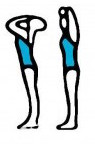
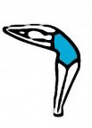
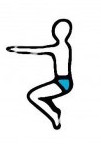

Bikram Yoga is a system of yoga that Bikram Choudhury synthesized from traditional hatha yoga techniques. It became popular in the early 1970s. All Bikram Yoga Beginning Series classes run for 90 minutes and consist of the same series of 26 postures, including two breathing exercises.Bikram Yoga is a hot yoga style, and is ideally practiced in a room heated to 35–42 °C (95–108 °F) with a humidity of 40%. All official Bikram classes are taught by Bikram-certified teachers, who have completed nine weeks of training endorsed by Choudhury. Bikram-certified teachers are taught a standardized dialogue to run the class, but are encouraged to develop their teaching skills the longer they teach. This results in varying deliveries and distinct teaching styles
The following are the 26 postures of Bikram Yoga. These are taught in the Beginning Bikram Yoga Class. The sequence is taught by people who have been trained and certified by Bikram Choudhury.
May help prevent respiratory problems
Strengthens muscles in body's core along with improving flexibility of the spine
Helps tone and shape legs while it may relieve arthritis in the legs
